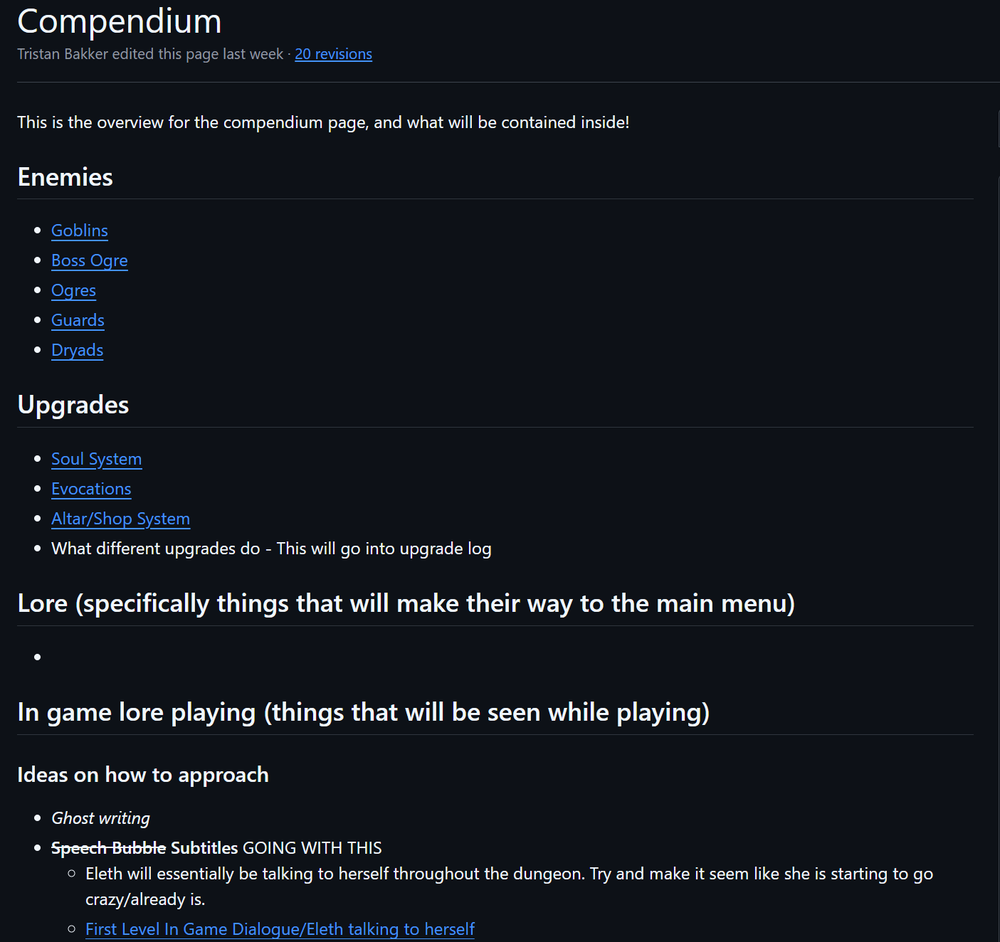
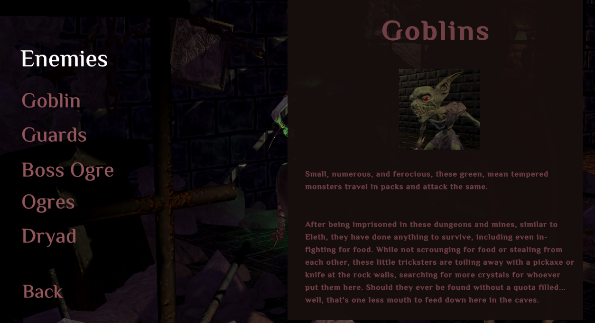
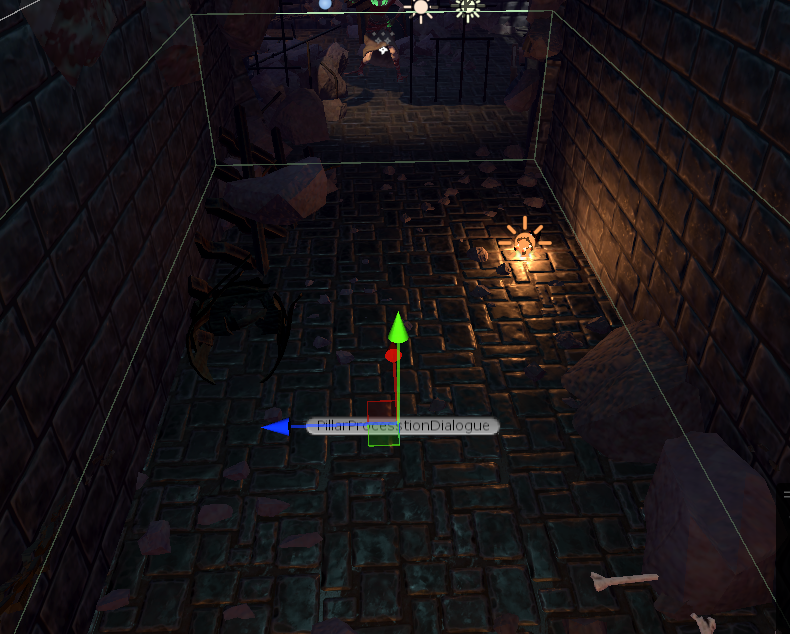
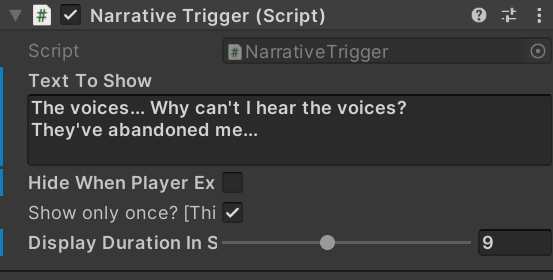

Bewitched was a semester long project along with a moderately sized team of fourteen members. It was my first experience at a 'triple A' quality of game, where in the stuido-like class our team was represented as the larger team project. I served as the Lead Design, initial systems designer, Technical Writer, and Narrative Designer.

One of the issues we had for our high-effot game was selling the plot behind our game, and giving more backround information about the game. People were interested in what the different monsters and enemies were doing in the dungeons. We came up with the idea of a compendium, an interactive menu to learn more about the systems of the game and everything you would encounter. The connecting image is a screenshot of a lot of our compendium pages that were written up in our github project repo, where I spent a lot of my time, making sure everything was properly updated.
This sometimes included going way back to pages that had been created weeks or even months ago to change the names of different terms that had been altered for clarification or other reasons, such as double naming.

To the right is an example of the final product of our compendium pages. I spent a good amount of time to get all of our photos for each enemy set up and properly explain to the players what each item does. I first wrote everything up in our technical documents in our GitHub repo, as seen in the image above, and then later ported into the game once it was approved.
During the process of creating the compendium in the menus, I consistently sought advice and check ins from our UI/UX specialist to make sure that everything was up to our standard of quality and that it would match her own work in other areas of the game. One of those decisions we came up with was the addition of the always present navigation bar on the left hand side after coming up with a few different kinds of solutions, such as a prototyped version of the navigation menu at the top of the screen running horizontally.

Further past the compendium, we wanted ways to introduce some of the concept of this witch named Eleth to be losing her mind due to her imprisonment. Initially, we thought about implementing different kinds of interactable objects throughout the game, like little ripped up letters or writings. However, we started to run into art chokepoint, where we didn't have the time to implement such items. To adapt to this, we instead chose to go for a spoken option, where it would seem as if our player character was talking to herself throughout the dungeon, descending into madness while going against some moral code of hers.

As seen in the next image, we came up with this green text to show up in the UI for the player to read, where they would then appear when walking into specific triggers throughout the level that I placed in the desired locations to make the narrative feel natural. Below are other images to show the trigger elements and what the scripted object looked like that we could update to alter the narrative.

